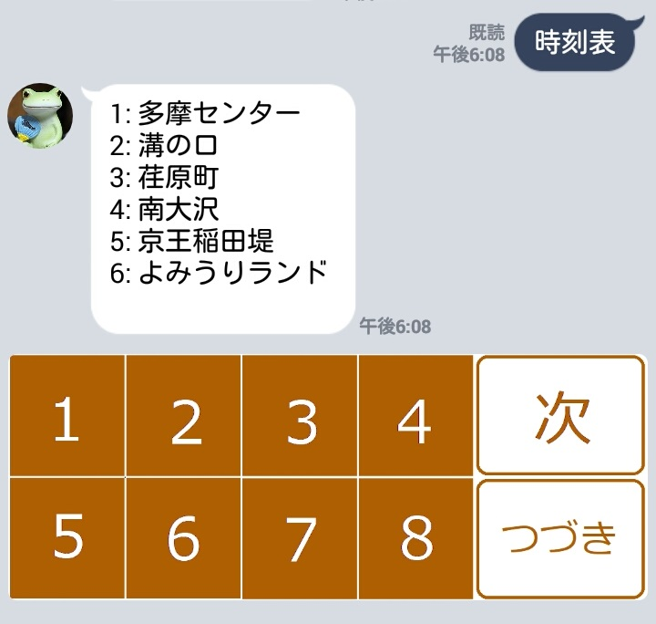
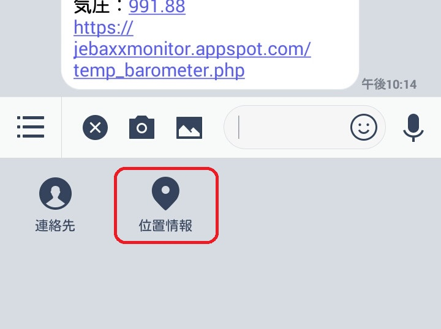
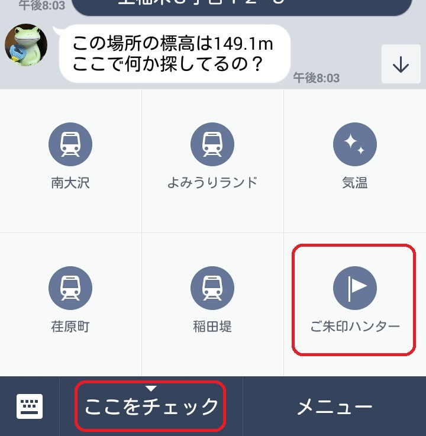
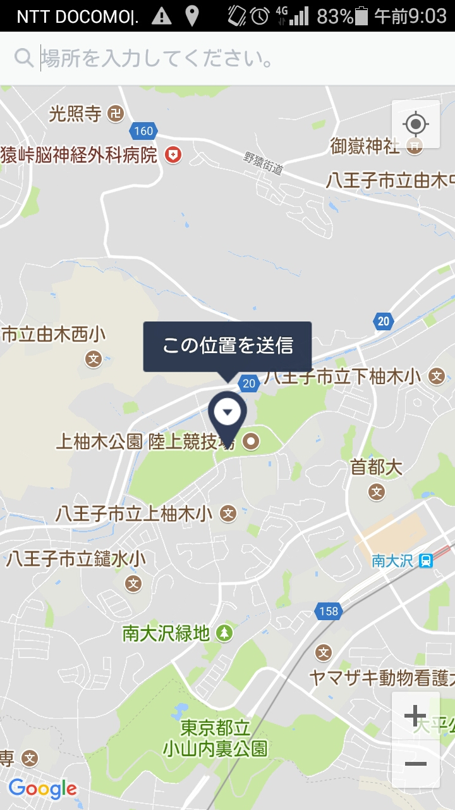
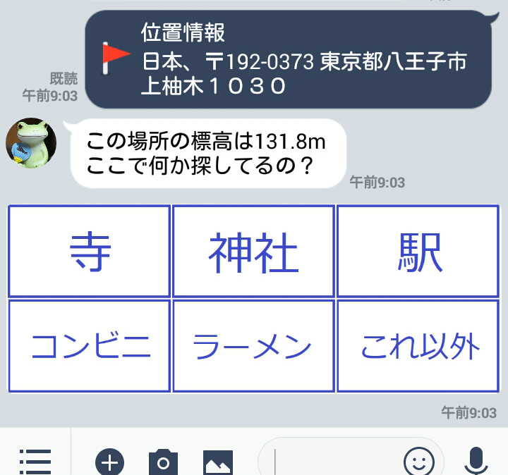
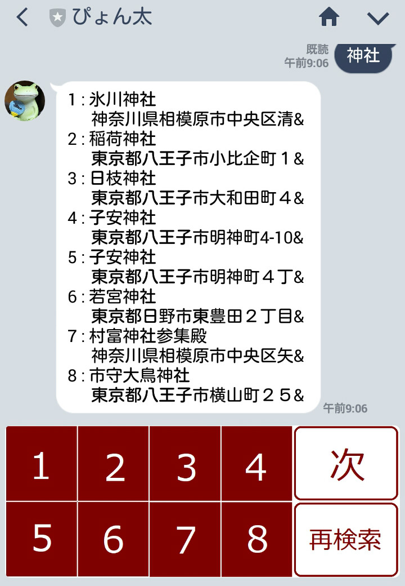
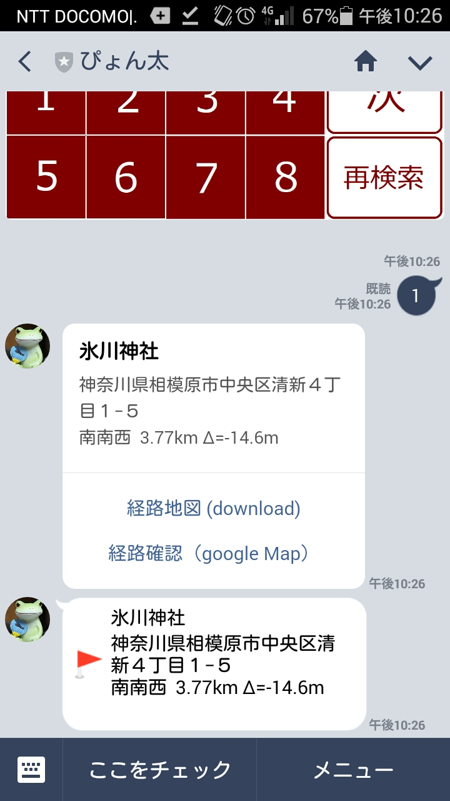
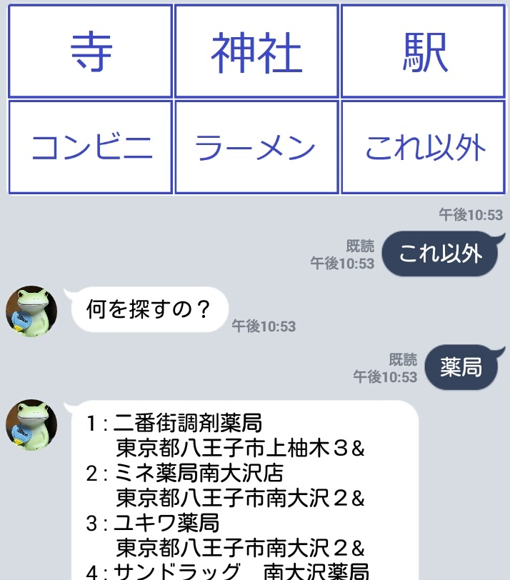
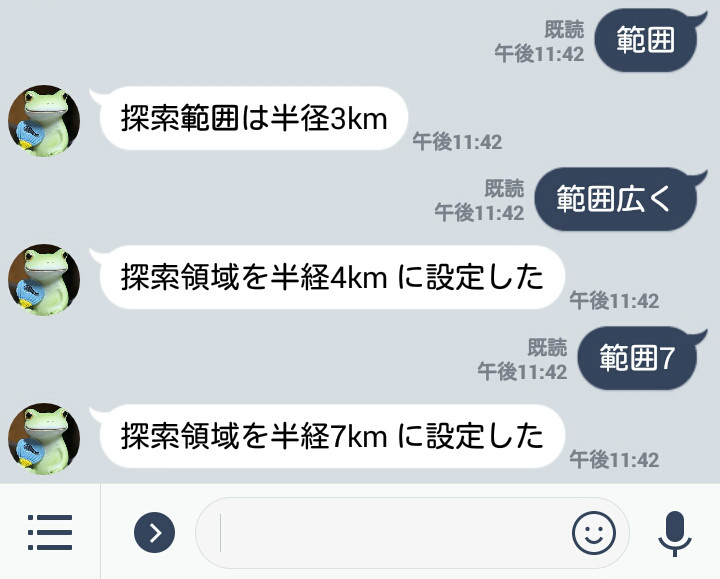
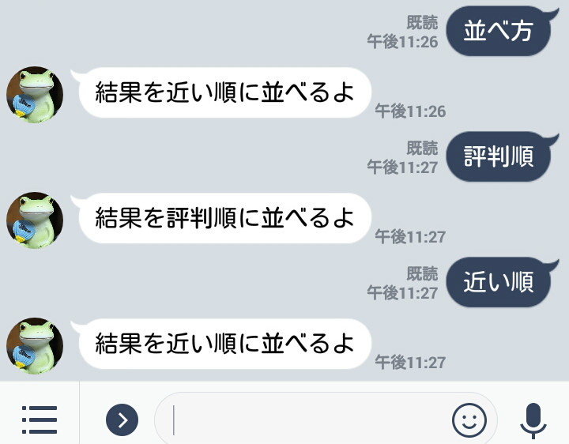

メニュー
目次…
参考リンク
居候（いそうろう）リンク
ぴょん太にできること
１．これから駅を出発する電車を調べて答えてくれる
２．部屋の温度と気圧を教えてくれる
- 八王子市内の某マンションの一室の現在（1分以内）の気温・気圧を教えてくれる
- 気温・気圧の推移がわかるグラフも表示してくれる
３．行きたいお店や施設を探して道案内してくれる
- 地図上で示した起点から、近くにあるお寺や神社（その他の施設）を探してくれる（別名ご朱印ハンター）
- 近隣のコンビニや駅など、機動力確保に欠かせない重要拠点も押さえてくれる
- 行きたいところを見つけたら、そこまでの道案内地図も作ってくれる
- google Mapにもリンクしてるので、口コミもすぐにチェックできる
◎ぴょん太をLINEの友達に登録して
◎トーク画面でぴょん太に質問して
◎「ぴょん太」の任務は、今後もどんどん増えてゆきます。
利用上の注意点を確認してください
１．これから駅を出発する電車を調べて答えてくれる
はじめに
ぴょん太に質問すると、質問した時刻と曜日（平日／土曜／休日）から、その時間以降に駅を出発する電車を調べて、この先４件分の出発時刻、行き先などを答えてくれます。
どの駅について質問したいのかは、事前にぴょん太にお願いしておく必要があります。駅を登録するための専用のWebページがありますので、そこから登録してください。
使い方（LINEアプリ）
◎「時刻表」＋駅名
"時刻表"と「駅名」を続けて入力し送信すると、その時間以降に出発する電車の時刻、行き先、電車種別などを答えてくれます。
◎「時刻表」
「時刻表」とだけ入れると、これまでに問い合わせのあった駅名の候補を表示してくれます（最大８駅）

◎つづき ・ 続き ・ その次
一度に調べてくれる電車は4本ですが、それより先の電車についても知りたい場合には、「つづき」「続き」「その次」などと聞いてください。続きの電車を更に4本調べて教えてくれます。

◎つぎ ・ 次
前回と同じ質問を繰り返したい時（忘れ物を取りに戻って出直すときなど）は「次」「つぎ」などと聞いてください。その時間以降の電車をもう一度しらべ直してくれます。

◎路線（上り/下りなど）の指定方法
駅ごとに優先する路線が設定されています。そのため、路線名を何も指定しなければ、ぴょん太は優先路線の発車時刻を調べます。優先路線以外を調べたい時には、"時刻表"と「駅名」に続いて「路線名」を入力してください。

前回問い合わせた駅の路線だけを別の物にかえる場合には、「路線名」だけ入力すればぴょん太は理解して調べ直してくれます。

使い方（利用したい駅の登録）
時刻表の登録・編集はこちらのページページの先頭に「登録済み時刻表」の一覧表があります。ここに自分が利用している駅が登録されていない場合や、使いたい路線が登録されていない場合には新しく登録してください。誰でも登録できます。
駅を追加したい場合には、時刻表一覧の下にある「時刻表編集」の入力欄に、駅名、路線名、時刻表URL、などを入力して、「新規作成」ボタンを押してください。
「URL」については、ここでは詳しく書きませんが、既に登録済みの駅を参考に登録したい時刻表ページをブラウザで表示し、アドレス欄のURLをコピーすれば登録は完了です。
正式駅名は今の所入力しているだけで使っていませんが、駅名を省略名にした場合などには正式名が参考になると思います。
優先路線は各駅に一つだけ設定できます。同じ駅に対して2つ目を設定しようとすると、元の優先路線が解除されて最後に設定した一つだけが有効になります。
休日・祝日・土曜のダイヤ
土曜・日曜ダイヤ
曜日についてはぴょん太が自分で判断して、適切な時刻表を調べてくれます。
祝日のダイヤ
祝日についても、ぴょん太は内閣府が公開している祝日情報を見て、当日が国民の祝日かどうか調べようとします。 ただし、例えば1月2日は祝日ではなく、他にも振替休日の制度や、鉄道会社による特別運用などもあり、正しく判断できない日が年に数日あります。ぴょん太が間違った時刻表を見ていたら、次のように教えてあげてください。
◎今日は祝日（休日・土曜・平日）
ぴょん太は教えられたことをその日一日覚えてるので一度だけ教えれば十分です。ぴょん太は言われたことを素直に覚えて他の人からの質問にもそれを元に答えようとしますので、絶対に嘘は教えないでください。
もう一つの方法：事前に暦を修正して休日を教えてあげるやり方
祝日の確認・編集ページはこちらこちらのページで祝祭日の情報を確認し、必要に応じて修正することができます。
ぴょん太がこの暦情報をチェックしに来るのは、その日に来た最初の質問に答える時です（※）。後はそれを覚えていて次の日までチェックに来ませんから、当日の暦を修正してもぴょん太には伝わりません。当日になってからダイヤを切り替えたい場合は、最初に書いた方法（ぴょん太に直接呼びかける方法）を使ってください。
（※）ぴょん太は一日の境目を午前2時だと思っているので、午前2時前、更に言えば、午前2時を超えてもまだ誰も質問して来ないうちに修正すれば、その結果が翌朝の質問には反映される、と言うのが正確な所です。
２．部屋の温度と気圧を教えてくれる
使い方
トーク画面に「気温」と入れるだけで応答してくれます。使い方はそれだけです。 気温・気圧の他に、今日の気温・気圧をグラフ表示してくれるページのURLも一緒に送ってきます。
３．行きたいお店や施設を探して道案内してくれる
はじめに
LINEアプリから送るロケーション情報を使ってぴょん太とコミュニケーションします。
今いる地点をぴょん太に教えると近隣の神社・寺社・駅・コンビニなど（それ以外も）を探して場所を教えてくれます。
探した場所への道順を示した地図も作ります。
道順をガイドするGoogle Mapのページにも移動できます。
使い方
ぴょん太とのトーク画面に位置情報が書き込まれるとぴょん太は探索の指示がされたと理解します。位置情報は以下のように送信します（LINEアプリのバージョンにより異なる場合があると思います）

メニューにも登録してあるのでメニューからも探索を開始できます。

地図画面に変わるので、どこを探索起点とするのかを示してください

位置情報を受け取ったぴょん太は、まずその場所の標高を調べてくれます。
次に何を探したいのか聞いてきます

ここで例えば、神社を探すように指示をすると、近隣（初期値は半径3km以内）の神社を調べて一覧を返してくれます。一度に最大で8件分を返しますが、それ以上ある場合には「次」と指示すれば続きの一覧も返してくれます。（最後に「もうない」と言わない場合はまだ続きがある）

目的地の番号を入れると以下のような詳細情報を返してくれます。
- 目的地名、住所、起点から見た方角、直線距離、標高差
- 起点から目的地までの道順を書いた経路地図（へのリンク）
- 起点から目的地までの道順を示すgoogle mapサイト（へのリンク）
- 目的地の位置情報（LINE地図に飛ぶ：google mapよりもシンプルだが軽快に動く）

再検索
起点を変えて調べ直したい場合は、探し物の途中でも、どの場面からでも位置情報を入れ直せば新しい探索を始めます。
場所はそのまま変えずに探す対象だけを変えたい場合は一旦「再検索」と入れてくださいください。ぴょん太はもう一度何を探すか聞き返してきます。
メニューに無いお店や施設を探す
メニューに無いものも、お店・病院・公共施設のような探し物であれば見つけ出せる可能性が高いです。まず探し物を聞かれている時に「これ以外」と入れてください。 ぴょん太が反応するので、探したいものを直接トーク画面に入れて送信してください。 探す対象は業種やカテゴリ名（「小児科」、「カレー屋」、「公園」、「ガソリンスタンド」など）が一般的ですが、具体的なお店の名前などでも探し出してくれるようです。

探索範囲の拡大・縮小
ぴょん太が探す範囲は何も言わなければ半径3km以内ですが、1km～7kmの範囲で変更できます。

探索結果の表示順変更
探索結果は、普通は指定された地点から近い順に並びますが、指示すれば評判順に変える事もできます。

利用上の注意事項
- 利用できるのは身内の範囲に限らせてください
なぜならば・・・- LINEの友達登録人数に制約があります（無料のお試しライセンスだから）
- 時刻表データを他所から無断でもらってきています。
- Webページはそれなりのセキュリティ対策はしてありますが十分にテストしている訳ではありません。重大な損害を被るようなことはないでしょうが、誰にでも開放してしまうと悪いイタズラをされる恐れはあります。
- 休日の設定や、時刻表情報は個人ごとではなく皆で共有するようにぴょん太に指示しています。個人ごとに管理させる事も可能ですが、あえてこのように教え込んでいます。
- 休日設定は利用者全員で一つです。ぴょん太に嘘を教えないでください
- 時刻表情報も利用者全員で共有します。他の人が利用しているかもしれないデータを不用意に消さないよう注意してください。
- 時刻表情報に間違った登録をしてそのままにしておくと他の利用者が混乱します。登録したらその内容が正しいか必ず確認してください。
- 駅や路線をどのくらいまで増やしてもぴょん太が支障なく対応できるのかよく分かっていません。駅を登録する際は一度に大量にやらずに、様子を見ながらお願いします。